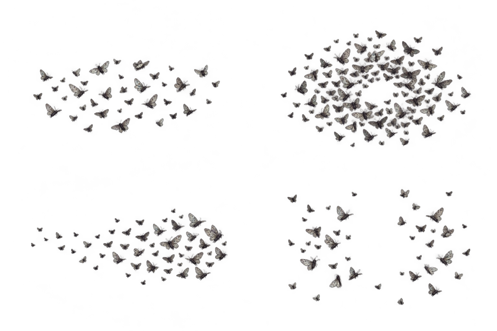

loose
source crop [93, 172, 595, 249] — static state only
무수정 원문 PNG의 브라우저 표시만 합니다. 낮은 alpha1/2 잔상이 있어 완전투명 간격 계약 미통과. 실제 게임/Native/광원·밀도/애니메이션 검토가 아닙니다.

source crop [93, 172, 595, 249] — static state only
source crop [859, 85, 605, 380] — static state only
source crop [87, 636, 624, 254] — static state only
source crop [879, 576, 583, 376] — static state only
크롭은 source viewBox로 표시합니다. 새 픽셀·이미지 편집·PNG 재출력은 없습니다.